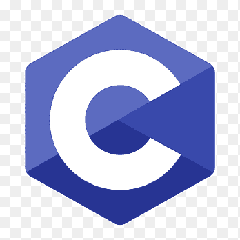
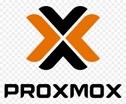

Site Web TryHackMe
Site Web de présentation de plusieurs modules sur la plateforme de cybersécurité TryHackMe. Contenu rédigé en français, informations sur les modules et vidéo de réalisation.
 HTML / CSS
HTML / CSS
 JavaScript
JavaScript
 Git
Git
AstroPhoto
Application permettant d'explorer et manipuler des images astronomiques. Récupération depuis la base MAST, outils zoom / filtres / combinaison de fichiers FITS multi-spectraux.
 Python
Git
Python
Git
IHM - PowerShell
Création d'une interface graphique pour interagir avec l'Active Directory d'une entreprise, pour la création de compte, suppression de compte, désactiver l'utilisateur. Projet seul avec création de documentation et formation au près des équipes pour l'utilisation de l'outil.
ReactionMarket
Création d'une interface graphique pour faire la gestion d'un supermarché en plaçant les produits, faire un chemin le plus court pour les clients, faire le suivi des stocks. Projet en groupe de 4.
Python
Git
Jeu textuel en C - WWII
Création d'un jeu textuel en C avec choix sur le thème de la Seconde Guerre mondiale, avec différentes missions et choix pour le joueur. Projet en groupe de 2.

CScript de sauvegarde - PowerShell
Création d'un script de sauvegarde en PowerShell pour automatiser la sauvegarde des fichiers et dossiers critiques pour une entreprise. Le script est lancé automatiquement chaque jour à une heure définie. Projet seul avec création de documentation.
Site Web - Vietnam
Création d'un site web de présentation d'un voyage au Vietnam, avec des photos, des descriptions des lieux visités, et des conseils pour les futurs voyageurs. Projet en groupe de 3. Création de la maquette, du design, et du contenu du site.
 HTML
HTML
Création d'un serveur GLPI
Serveur de gestion de parc informatique installé et configuré sur une VM Linux SUSE. Intégration d'une base de données MariaDB, Nginx et GLPI en container Podman.
 MariaDB
MariaDB
 Nginx
Nginx
 Podman
Podman
Jeu morpion - socket
Création d'un jeu de morpion en utilisant les sockets pour la communication entre les clients et le serveur. Projet en équipe de 4 avec la création de diagramme de fonctionnement du code.
Serveur Web - Virtualisation
Création d'une machine virtuelle pour agir comme serveur Nginx, Php, et MariaDB. Projet en équipe de 2 avec suivi des commandes et création de documentation technique.
Nginx
MariaDB
 Php
Php
Virtualiser windows XP
Virtualisation d'ordinateur sous Windows XP, qui permet de les mettre sur des systèmes d'exploitation plus récents, et de les faire fonctionner dans un environnement sécurisé. Projet seul avec création de documentation technique.
 VirtualBox
VirtualBox
Serveur Proxmox
Création d'un serveur de virtualisation Proxmox, permettant de gérer et d'orchestrer plusieurs machines virtuelles. Projet en équipe de 3 avec suivi des différents OS utilisés et création de documentation technique.

ProxmoxUtilisation de GitHub
J’utilise GitHub pour héberger mes projets, gérer le versioning et collaborer efficacement en équipe grâce aux dépôts, branches et outils intégrés.
Rédaction de Cahiers des Charges
Participation à la rédaction de cahiers des charges pour structurer les projets, définir les besoins et garantir une cohérence du développement.
Aucun projet dans la catégorie pour l'instant.